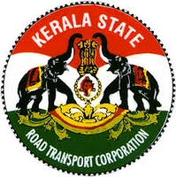
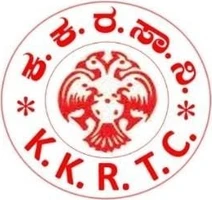
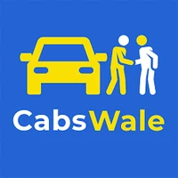
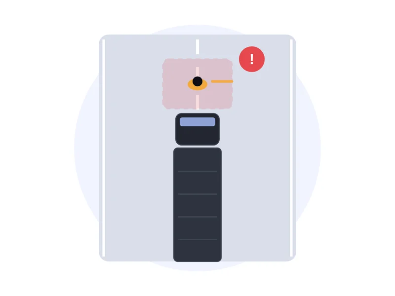
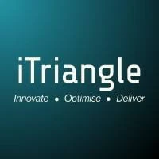
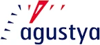

01 · सटीकता
ऐसे अलर्ट जिन पर ड्राइवर भरोसा करें, अनदेखा न करें।
जब अलार्म बार-बार बेवजह बजता है, तो ड्राइवर कैमरा ढक देते हैं। हमारे अलर्ट असली ख़तरे पर ही बजते हैं: 95% से ज़्यादा सटीकता और लगभग शून्य ग़लत अलर्ट।
95% से ज़्यादा सटीकताSapience Automata™ सड़क पर हर वाहन के लिए AI सुरक्षा प्लेटफ़ॉर्म बनाता है: गाड़ी पर ही चलने वाली ड्राइवर मॉनिटरिंग और ADAS, 95% से ज़्यादा अलर्ट सटीकता के साथ।
हर कैब पर, हर घंटे कोई नज़र नहीं रख सकता। इसीलिए फ़्लीट ये काम Sapience Automata™ को सौंपती हैं।
जब अलार्म बार-बार बेवजह बजता है, तो ड्राइवर कैमरा ढक देते हैं। हमारे अलर्ट असली ख़तरे पर ही बजते हैं: 95% से ज़्यादा सटीकता और लगभग शून्य ग़लत अलर्ट।
95% से ज़्यादा सटीकताAI गाड़ी पर ही चलता है। नींद या ध्यान भटकते ही पहचानता है और उसी पल ड्राइवर के लिए बीप करता है, दिन हो या रात, बिना किसी के स्क्रीन देखे।
On-device AI · 24×7आपकी बस किसी अनजान के हाथ में हो, ये ख़तरा आपने कभी नहीं चुना। फ़ेशियल रिकग्निशन हर ड्राइवर की जाँच करता है और लिस्ट से बाहर वाले को तुरंत फ़्लैग करता है।
ड्राइवरों के लिए Face IDनींद के झोंके, ध्यान भटकना और तेज़ रफ़्तार मिलकर बनते हैं ड्राइवर स्कोर और परफ़ॉर्मेंस रिपोर्ट, ताकि आप सही लोगों को असली सबूत के साथ कोच करें।
हर ट्रिप पर ड्राइवर स्कोरभारत सरकार द्वारा पेटेंट 575297 जारी, CMVR 2025 DDAWS के लिए बना, TU Delft और NTU सिंगापुर के रिसर्च सलाहकारों के साथ। redBus, KSRTC और Volvo Eicher का भरोसा।
पेटेंट 575297 जारीरात के रूट पर एक पल की झपकी काफ़ी है। ज़्यादातर हादसों की शुरुआत ड्राइवर से होती है, यानी ड्राइवर को समय पर सचेत करके ज़्यादातर रोके जा सकते हैं।
1.7 लाख+
भारतीय सड़कों पर हर साल जानें जाती हैं
4.8 लाख+
भारत में हर साल सड़क हादसे
90%
हादसों की जड़ ड्राइवर की ग़लती
47%
जानलेवा हादसे नींद में ड्राइविंग से जुड़े
स्रोत: MoRTH, Road Accidents in India 2023 (4,80,583 हादसे, 1,72,890 मौतें); ड्राइवर की ग़लती के योगदान पर इंडस्ट्री और फ़्लीट टेलीमैटिक्स अध्ययन।
01
डैशबोर्ड या A-पिलर पर लगा छोटा AI कैमरा ड्राइवर की आँखें और चेहरा रियल टाइम में पढ़ता है।
02
ड्राइवर को नींद आते या ध्यान भटकते ही केबिन में तुरंत अलर्ट बजता है।
03
हर अलर्ट CoPilot AI™ वेब और मोबाइल ऐप पर फ़्लीट मालिक तक पहुँचता है।
आँखें बंद होना और सिर झुकना, पल भर में पकड़ा।
जम्हाई और लंबी शिफ़्ट की थकान, समय रहते पहचानी।
नज़र सड़क से हटी या फ़ोन पर।
तेज़ रफ़्तार और झटकेदार ड्राइविंग पर लाइव अलर्ट।
ड्राइवर का चेहरा न दिखने पर अलर्ट।
केबिन में असुरक्षित आदतें, कोचिंग के लिए दर्ज।
फ़ेशियल रिकग्निशन जानता है कि गाड़ी कौन चला रहा है।
मदद, बस एक बटन दूर।
एक ही इन-व्हीकल प्लेटफ़ॉर्म पर कंप्यूटर विज़न, व्यवहार विश्लेषण और edge AI। फ़्लीट बढ़ने पर कैमरे और मॉड्यूल जोड़ें, बॉक्स बदले बिना।
6–12 TOPS NPU। कंप्यूटर विज़न और व्यवहार विश्लेषण गाड़ी पर, रियल टाइम में।

1 AI कैमरा · >95% सटीकता · DMS + DFMS
AI ड्राइवर नींद और ध्यान चेतावनी, जो ड्राइवर के भटकते ही बीप करती है और हर अलर्ट CoPilot AI™ पर दर्ज करती है।

4 AI कैमरों तक · 6–12 TOPS NPU
हर ADAS मॉड्यूल एक edge डिवाइस पर, साथ में वेब और मोबाइल पर फ़्लीट डैशबोर्ड। ज़रूरत के साथ कैमरे और मॉड्यूल जोड़ें।
डुअल कैमरा · दोपहिया
उसी edge AI पर राइडर सुरक्षा, राइडर के लिए आगे और पीछे की नज़र और CoPilot AI™ पर फ़्लीट डेटा।
अब तक 60K+ नींद, 80K+ ध्यान भटकने और 60K+ थकान अलर्ट, और 3 महीनों में ड्राइवर परफ़ॉर्मेंस में 30% सुधार।
नींद, ध्यान भटकने और सड़क के ख़तरों पर उसी पल अलर्ट।
पेटेंटेड AI जो गाड़ी के आसपास का ख़तरा पहले पढ़ता है, बाद में नहीं।
हर ड्राइवर के लिए स्कोर, स्नैपशॉट और कोचिंग डेटा।
हर वाहन के लाइव अलर्ट और लोकेशन, वेब और मोबाइल पर।
रूट, शिफ़्ट और ड्राइवरों के रुझान, ताकि आप असली वजह ठीक करें।
ड्राइवर व्यवहार के साथ OBD और CAN डेटा, एक ही प्लेटफ़ॉर्म पर।
पेटेंट नं. 575297, भारत सरकार द्वारा जारी, वाहन के आसपास के ख़तरों के शुरुआती अनुमान के लिए, और 10+ पेटेंट प्रक्रिया में। Blinksmart™, CMVR (छठा संशोधन) नियम 2025 के DDAWS नियम के लिए बना है।
स्रोत: G.S.R. 834(E), MoRTH, 11 नवंबर 2025।
3 Cr+ km, एक भी जानलेवा दुर्घटना नहीं।
लगभग शून्य फ़ॉल्स अलार्म के साथ ज़रूरी अलर्ट, बिना परेशान करने वाले डिज़ाइन में।
ड्राइवर और मालिक, दोनों के लिए।
असली केबिन और असली सड़कों के लिए जड़ से समाधान।
संस्थापक की गहरी समझ, ADAS में 10+ साल और वैश्विक यूनिवर्सिटी साझेदारी।
Volvo Eicher के रजिस्टर्ड वेंडर। redBus, KSRTC और CabsWale हमारे पार्टनर्स में।
हार्डवेयर, फ़र्मवेयर और ऐप्स, सब ख़ुद बनाए।
हर ज़रूरी ADAS मॉड्यूल के लिए एक प्लेटफ़ॉर्म। GeM पोर्टल पर रजिस्टर्ड OEM।
पूरे भारत में इंटरसिटी बस ऑपरेटर, राज्य परिवहन, कैब प्लेटफ़ॉर्म, कोच बिल्डर, टेलीमैटिक्स पार्टनर और OEM।












“रात की लंबी ड्राइव में लगातार ध्यान चाहिए। अलर्ट सिस्टम से मैं सच में सतर्क और सड़क पर ज़्यादा सुरक्षित रहता हूँ।”
डैशकैम हादसा रिकॉर्ड करता है। Blinksmart™ ड्राइवर पर नज़र रखता है और नींद या ध्यान भटकते ही अलर्ट देता है, ताकि वो समय पर संभल सके। AI डिवाइस पर चलता है, इसलिए अलर्ट क्लाउड का इंतज़ार नहीं करते।
हाँ। Blinksmart™, CoPilot AI™ इकोसिस्टम का हिस्सा है। अलर्ट, लाइव लोकेशन और ड्राइवर स्कोर CoPilot AI™ वेब और मोबाइल ऐप पर फ़्लीट मालिक तक पहुँचते हैं।
बसें, ट्रक, कैब और विशेष वाहन, रेट्रोफ़िट के रूप में या OEM के साथ फ़ैक्ट्री-फ़िट। CoPilot AI™ एक AI कैमरे से चार तक बढ़ता है।
दोनों। Blinksmart™ नींद और ध्यान भटकने पर रियल टाइम में अलर्ट देता है, और हमारा पेटेंटेड AI वाहन के आसपास के ख़तरों के शुरुआती अनुमान के लिए बना है।
Blinksmart™, CMVR (छठा संशोधन) नियम 2025 के लिए बना ड्राइवर नींद और ध्यान चेतावनी सिस्टम है। अपनी फ़्लीट में रेट्रोफ़िट के लिए हमसे बात करें।
अपने वाहन में Blinksmart™ और CoPilot AI™ लाइव देखें। हमारी टीम आपको डेमो दिखाएगी।